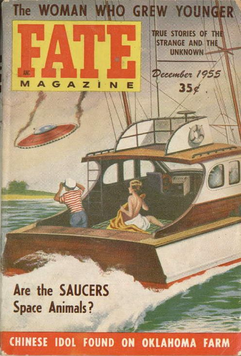

Couverture de Fate ce mois-ci

Un combat tournoyant oppose un disque volant à 3 chasseurs de la Marine US. Ces
derniers sont très largement dominés par leur adversaire. Le combat est suivi au radar.
Observation à Caribou (Maine)Cas Blue Book n° 3993 non résolu.